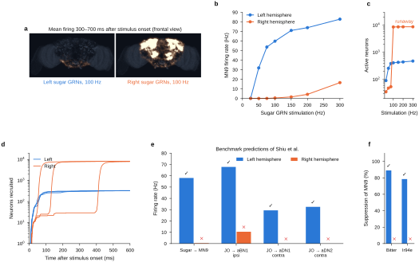
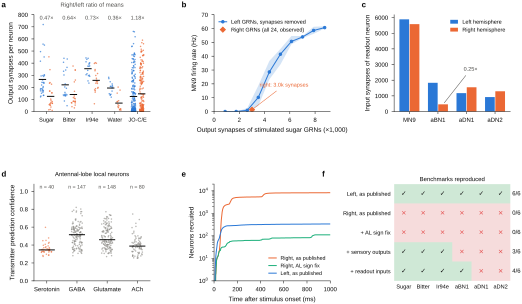
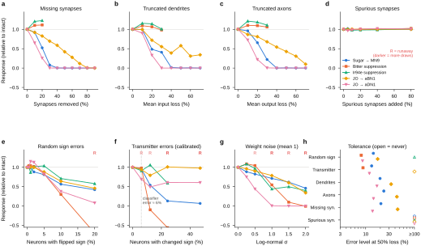
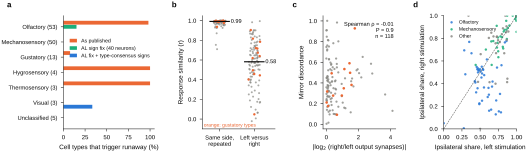
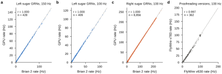
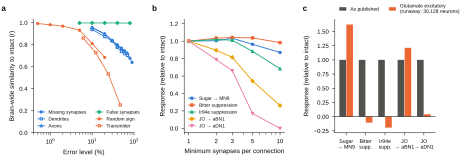
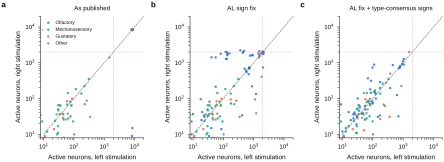
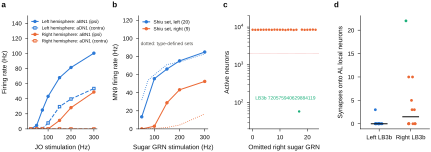

要旨 全脳コネクトームにより昆虫の全脳スパイキングモデルを配線のみから構築でき、予測は実験で確認されている。しかしコネクトームはシナプスの見逃しや偽のシナプス、神経突起の切断、伝達物質の誤判定などの再構成の誤りを含み、模擬活動への影響は不明である。本研究は FlyWire の左右半球を内在的な反復とした。ショウジョウバエ全脳モデルの公表済みベンチマーク予測 6 つは右半球から実行するとすべて失敗し、砂糖受容ニューロンの刺激で 138,639 個中約 8,600 個のニューロンが暴走した。失敗の大半は、おそらく再構成の誤りである四つの左右非対称性による。すなわち、砂糖受容ニューロンの弱い出力、入力が相同ニューロンの 4 分の 1 しかない触角掃除の介在ニューロン、触角葉へ配線された 1 個の砂糖受容ニューロン、低い確信度でセロトニン作動性と予測され興奮性の増幅器として働く触角葉の 40 個のニューロンである。うち三つの補正で四つの予測が回復した。誤りの注入では、予測はランダムに置いた偽のシナプスには耐えたが、多くはシナプスの 14〜24% の欠損で半減した。131 の感覚細胞タイプでは、左右の応答の一致度は反復実行間より大幅に低い（中央値 r = 0.58 対 0.99）。鏡像テストはコネクトーム・シミュレーションの簡便な対照となる。
Abstract Whole-brain connectomes allow spiking models of an entire insect brain to be built from wiring alone, and their predictions can be confirmed experimentally. Yet connectomes contain reconstruction errors — missed and spurious synapses, truncated neurites and mispredicted neurotransmitters — with unknown effects on simulated activity. Here we use the two hemispheres of FlyWire as built-in replicates. Simulated from the right instead of the left hemisphere, all six published benchmark predictions of a whole-brain Drosophila model failed, and sugar-receptor stimulation drove about 8,600 of 138,639 neurons into runaway excitation. Four left–right asymmetries, probably reconstruction errors, account for most failures: weaker sugar-receptor outputs, a grooming interneuron with a quarter of its homologue's inputs, a single sugar-receptor neuron wired into the antennal lobe, and 40 antennal-lobe neurons predicted with low confidence to be serotonergic, which act as excitatory amplifiers. Correcting three of them restores four predictions. Error injection shows that predictions tolerate randomly placed spurious synapses but that most halve when 14–24% of synapses are missing. Across 131 sensory cell types, left and right responses agree far less than repeated runs (median r = 0.58 versus 0.99). Mirror tests offer a simple control for connectome-based simulations.
キーワード：コネクトーム，スパイキングニューラルネットワーク，ショウジョウバエ，再構成誤差，鏡像テスト，FlyWire
電子顕微鏡による高密度の再構成は、いまや成虫のショウジョウバエの中心脳6と脳全体1,2を、さらに最近では脳と腹側神経索をあわせた全体7,8を網羅している。これらの配線図はそのままシミュレーションに用いられてきた。FlyWire の脳に基づく漏れ積分発火（leaky integrate-and-fire; LIF）モデルは、自由パラメータを一つしか持たないにもかかわらず、どのニューロンが味覚入力や機械感覚入力に応答するかを予測し、検証された 164 の予測のうち 91% が実験で確認された3。コネクトームに制約された視覚系のモデルも同様の進展を見せている9,10。その魅力は、配線図に一般的なニューロンの性質を加えるだけで機能を予測できるかもしれない点にあるが、解剖学的構造が活動をどこまで制約するかについては議論が続いている11–13。
しかし、配線図は誤差を伴う測定値である。成虫ハエ全脳（full adult fly brain; FAFB）ボリュームにおけるシナプスの自動検出の F 値は約 0.74 である（文献 5）。FlyWire のシナプス後部位のうち、校正（proofreading）済みのニューロンに帰属しているのは 44.7% にすぎない1。トレースの誤りの大半は細い分枝の欠落である14。神経伝達物質の種類は画像から 87〜94% の精度で予測されるが、セロトニンでは 33% に低下する4。さらに、一方の半球で見つかる結合のおよそ 40% は他方の半球には存在しない2。Shiu らは予測が全体的なパラメータにどう依存するかを検討したが3、特定の再構成誤差がシミュレーション上の活動にどのように波及するかは測定されておらず、また公表されたシミュレーションの多くは一方の半球のニューロンを刺激していた3。
ハエの脳の左右対称性は自然な対照を与える。左右の相同ニューロンは細胞タイプを共有し、強い結合については結合相手の 90% 以上も共有する2。また、幼虫のコネクトームでは、二つの半球が対をなすネットワーク標本として比較されている15。したがって、回路の生物学的性質を反映した予測であれば、同じ実験を同じ脳の鏡像側からシミュレートしても成り立つはずである。本研究では、FlyWire 全脳モデルのベンチマーク予測に対してこの鏡像テストを行い、見出された失敗の原因となる左右の非対称性を特定し、7 種類の再構成誤差がモデルの予測をどのように変えるかを定量化した。
Shiu らの LIF モデル3を、グラフィックスプロセッサ（GPU）上で多数の試行を並列に実行するイベント駆動型シミュレータとして再実装した（4.2 節）。公表された方程式と定数を用いると、このシミュレータは元の Brian 2 実装16,17をニューロン単位で再現した（3 条件で活動した 409〜8,856 個のニューロンについて Pearson の r ≥ 0.999。150 Hz の刺激で 2 個の MN9 運動ニューロンの発火率は 56.7 Hz と 85.8 Hz で、元の実装では 56.6 Hz と 85.9 Hz。補足図1a–c）。138,639 個のニューロン、1,510 万の結合、5,450 万のシナプスからなる FlyWire v783 の脳で、1 秒の試行に要した時間は約 0.2 秒であった。校正版 v630 と v783 の間で識別子が保たれ、いずれかの版で発火した 362 個のニューロンについて、Shiu らの元の砂糖ニューロンに対する応答の相関は r = 0.997 であったが、v783 では MN9 の発火が 12% 少なかった（補足図1d）。
すべてのベンチマークをどちらの側からも実行できるよう、各刺激と読み出しを細胞タイプと半球によって定義した（4.3 節）。ベンチマークには、Shiu らの予測のうち実験で確認された 6 つを用いた3,18,19。すなわち、砂糖の味覚受容ニューロン（GRN）は口吻の運動ニューロン MN9 を活性化する。苦味 GRN と Ir94e GRN はこの活性化を抑制する。ジョンストン器官（JO）ニューロンは、触角掃除（グルーミング）にかかわる脳ニューロン aBN1 を同側で、触角掃除の下行性ニューロン aDN1 と aDN2 を反対側で活性化する。本研究の刺激は細胞タイプ全体からなる。たとえば、タイプ LB3b と LB3c の左の砂糖 GRN 33 個すべて20や、左の JO-C および JO-E ニューロン 229 個すべてである。そのため、Shiu らが選んだニューロン集合（砂糖ニューロン 21 個と JO-CE ニューロン 70 個）とは異なる。これらの集合については後で検討する。
左半球から刺激すると、モデルは 6 つのベンチマークをすべて再現した（図1）。左の砂糖 GRN は刺激頻度 50 Hz から MN9 を駆動し、100 Hz では 58 Hz に達した。苦味 GRN または Ir94e GRN を加えると、この応答はそれぞれ 89% と 78% 抑制された。JO ニューロンは aBN1 を 68 Hz で、反対側の aDN1 と aDN2 をそれぞれ 29 Hz と 33 Hz で駆動した（図1b, e, f）。
同じシミュレーションを右半球から行うと、すべての場合で失敗した（図1e, f）。右の砂糖 GRN（24 個）が MN9 に引き起こした発火は、100 Hz の刺激で 1 Hz 未満、300 Hz でもわずか 17 Hz であった（図1b）。その代わりに、100 Hz 以上ではネットワークが暴走（runaway）状態に陥り、8 試行のうち少なくとも 1 回発火したニューロンは 8,612 個に達した。これは左から動員された 412 個の 21 倍である（図1a, c）。暴走は、右の応答が左と似ている期間を経た後、3 回の試行でそれぞれ 59、135、414 ms に突然始まった（図1d）。元の Brian 2 のコードでも暴走が再現された（刺激していない活動ニューロン 8,742 個、MN9 は 0.55 Hz）ことから、実装の誤りは否定される。右の JO ニューロンは同側の aBN1 をわずか 11 Hz でしか駆動せず、反対側の下行性ニューロンは 300 Hz までのどの刺激頻度でもまったく駆動しなかった（補足図4a）。この失敗は、右半球のどのニューロンを刺激するかに部分的に依存する。Shiu らが選んだ右の砂糖ニューロン 9 個（タイプ LB3c と LB4b）は、150 Hz 以上で暴走を起こさずに MN9 を駆動したが、その強さは彼らの左の集合より弱かった（150 Hz で 29 Hz 対 66 Hz。補足図4b）。
コネクトーム上で、右の味覚ニューロンは左の相同ニューロンと系統的に異なっている。右の砂糖 GRN 1 個あたりの出力シナプスは平均 125 個であり、左の 265 個より少ない（比 0.47）。苦味、Ir94e、水の GRN の比はそれぞれ 0.64、0.73、0.36 であるのに対し、JO ニューロンには欠損が見られない（1.18。図2a）。注釈されたニューロンが 9 個少ないこととあわせて、右の砂糖 GRN が持つ出力シナプスは合計 3,000 個で、左の 8,800 個に遠く及ばない。
この欠損で MN9 の活性化の消失を説明できるかを調べるため、左の砂糖 GRN の出力シナプスをランダムに選んで除去した。総数が約 5,000 個を下回ると MN9 の活性化は急激に低下し、右半球と同じ 3,000 個では左の曲線は 1〜10 Hz を予測した。これは右から観測された 1.3 Hz と一致する（図2b。いずれも後述の触角葉補正を適用）。したがって、この読み出しに関しては、右の砂糖ニューロン集団はシナプスが欠けた左の集団のようにふるまう。FlyWire では強い相同結合が左右の半球間でよく一致し2、シナプス検出の改善によって左右対称性が高まる21ことから、感覚ニューロン集団全体にわたる 2 倍の欠損は、生物学的な非対称性よりも、校正が不完全な軸索やシナプスの見逃しといった再構成の誤りである可能性が高い。ただし、本研究のデータから前者を除外することはできない。

触角掃除ベンチマークの失敗は別の原因による。JO ベンチマークの読み出しである右の aBN1 の入力シナプスは 459 個で、左の相同ニューロンの 1,833 個の 4 分の 1 しかなく、JO ニューロンから直接受けるシナプスも 103 個ではなく 35 個である（図2c）。この場合、非対称性は回路の読み出し側にある。
シナプスの欠損は暴走を説明しない。公開版のコネクトームで左の GRN の出力シナプスを最大 90% まで除去しても、暴走は一度も生じなかった（活動ニューロンは最大 418 個）。暴走を説明するのは、さらに二つの非対称性である。第一に、右の砂糖 GRN 24 個を 1 個ずつ除いて刺激する（leave-one-out）と、それを除くことで暴走が消失する単一のニューロン（LB3b、FlyWire 720575940629884119）が特定された（活動ニューロンは 8,522 個ではなく 58 個。補足図4c）。このニューロンは 154 個の出力シナプスのうち 22 個を il3LN6 タイプの触角葉局所ニューロンに形成しているのに対し、左の LB3b ニューロンが形成するこのようなシナプスは最大 3 個である（補足図4d）。Shiu らが選んだ右の砂糖ニューロン 9 個にはこのニューロンが含まれておらず、それらで暴走が起こらなかった理由はこれで説明される。
第二に、触角葉に入った活動は lLN2T_b、lLN2T_c、lLN2T_e タイプの局所ニューロンによって増幅され、その後、中心脳全体に広がった。これらのニューロンはセロトニンを放出すると予測されており、モデルはセロトニンを興奮性として扱う3。しかし、この予測は不確かである。セロトニン作動性とラベル付けされた触角葉の局所ニューロン 40 個（各半球に 20 個）の確信度の中央値は 0.35 であり、GABA 作動性、グルタミン酸作動性、コリン作動性とラベル付けされた局所ニューロンよりも低い（図2d）。触角葉の局所ニューロンは主に GABA 作動性で、少数のグルタミン酸作動性およびコリン作動性の細胞を含む22。また、触角葉を支配することが知られている唯一のセロトニン作動性ニューロンは反対側に投射する CSD ニューロンであり23,24、これは局所ニューロンではない。この 40 個のニューロンだけを抑制性にすると、左半球のベンチマークを一つも変えることなく暴走が消失した（活動ニューロンは 8,680 個ではなく 236 個。図2e, f）。この増幅器は両半球に存在するため、暴走が右からのみ起こった理由を説明するのは、右に特有の入口となる経路のほうである。

より大雑把な補正の結果は、符号の仮定を仮説として扱わなければならない理由を示している。セロトニン作動性と予測された 2,201 個のニューロンをすべて抑制性にしても暴走は防げたが、左半球の苦味による抑制が消失した（MN9 は苦味入力なしで 59 Hz、ありで 58 Hz）。左の苦味 GRN 21 個のうち 7 個自体がセロトニン作動性と予測されているためである。右では苦味 GRN 21 個のうち 19 個にこのラベルが付いており、同じ細胞タイプが左右の半球で異なる伝達物質の予測を受けていることになる。
触角葉の符号補正だけでは、暴走が弱い応答に置き換わるだけで、右半球は 6 つのベンチマークのいずれも再現しなかった。右の各感覚ニューロン集団の出力の重みを左の 1 ニューロンあたりの平均に合わせて拡大すると（砂糖 GRN は ×2.12、苦味 GRN は ×1.57、Ir94e GRN は ×1.38）、MN9 の活性化（47 Hz）と、苦味入力（85%）および Ir94e 入力（93%）によるその抑制が回復した。右の読み出しニューロンの入力を左の総数に合わせて拡大すると（aBN1 は ×3.99、MN9 は ×1.06）、JO ニューロンによる aBN1 の活性化が回復した（74 Hz。左は 68 Hz。図2f）。aDN1 と aDN2 の反対側での活性化は回復せず（3 Hz）、右の砂糖刺激は依然として左の刺激より多くのニューロンを動員した（1,044 個対 429 個）ことから、特定できていない違いがほかにも残っていることがわかる。これらの補正は、左半球を基準として十分性を検証するものにすぎない。
再構成誤差の種類ごとに、それが予測にどう波及するかを測定するため、コネクトームに 7 種類の誤りを人為的に加え、左半球のベンチマークを再実行した（各水準で 3 回のランダムな抽出。図3）。予測は、ランダムに配置された偽のシナプスには影響されなかった。既存の結合度に比例して選んだ相手どうしの間にシナプスを 80% 追加しても、どのベンチマークも変化しなかった（図3d）。一方、予測はシナプスの見逃しには敏感であった。シナプスをランダムに除去すると、aDN1 の活性化は 14%、MN9 の活性化は 21%、aBN1 の活性化は 45% の除去で半減した。30% では MN9 の応答は誤りのない場合の 8% に低下し、40% では消失した（図3a, h）。樹状突起や軸索の切断、すなわち各ニューロンの入力または出力のランダムな割合を除去することも、同様の効果をもたらした（図3b, c）。苦味と Ir94e による抑制は、砂糖が MN9 を駆動している限り保たれ、それを超えると評価できなかった。

ランダムな符号の誤りは、低い割合であれば許容された。1〜2% のニューロンが興奮性と抑制性の間で切り替わっても、ベンチマークの平均応答は誤りのない場合の 15% 以内にとどまったが、個々の抽出では最大 50% のずれが生じた。8〜18% では 5 つのベンチマークのうち 4 つで効果が半減し、20% では 3 回の抽出のうち 2 回で暴走が起こった（図3e）。伝達物質分類器自身の確信度に基づいて誤りを生成した場合、ニューロンの 8.2% の伝達物質と 6.1% の符号を変える倍率（分類器が報告するニューロン単位の誤り率約 6%（文献 4）に相当する）では、3 回の抽出のうち 2 回ですべてのベンチマークが誤りのない場合の 20% 以内に保たれたが、残る 1 回では暴走が起こり、aDN1 の活性化の大部分が失われた（図3f）。このように較正された誤りは、同程度の大きさのランダムな符号の誤りよりも平均として大きな損傷を与えるわけではなかったが、より頻繁に暴走を引き起こした（3 回中 1 回。5% のランダムな反転では 0 回）。平均の重みを一定に保ったままシナプス数のまわりでシナプス強度をばらつかせた場合、対数正規分布の σ = 0.25 ではおおむね許容された（aDN1 の活性化は −25%）。0.5 では aDN1 の活性化が 56% 低下して 3 回中 1 回で暴走が起こり、σ = 1 ではすべての抽出で暴走が起こった（図3g）。解析上の慣習も影響した。一般的な閾値1である 5 シナプス未満の結合を除外すると、JO による aDN1 の活性化は 83%、aBN1 の活性化は 46% 減少した。また、グルタミン酸を興奮性として扱うと、Shiu ら3が予想していたとおり、30,128 個のニューロンが暴走し、二つの抑制ベンチマークがともに逆転した（補足図2b, c）。誤りのない応答に対する脳全体の類似度は、ベンチマークが急激に崩れる場合でもなだらかにしか低下しなかった（補足図2a）。
これらの用量反応曲線は、図2 の非対称性がなぜ重要なのかを説明する手がかりとなる。モデルの唯一の重みパラメータは再構成されたままのコネクトームに合わせて調整されているため3、脳全体に一様に共通する欠損であればその較正によって部分的に吸収されうるが、一つの回路に限られた欠損は吸収されない。左の砂糖受容ニューロンだけからシナプスを除去すると、約 50% の欠損で MN9 の応答が半減し（図2b）、右の砂糖受容ニューロンの出力シナプスの総数は左より 66% 少ない。
左右半球間の不一致がベンチマークの回路に特有のものかを調べるため、131 種類の感覚細胞タイプ（左右それぞれに 3 個以上の注釈付きニューロンを持つすべてのタイプ）のそれぞれを、左と右から刺激した（4.6 節）。公開版のコネクトームでは、60 タイプ（46%）が少なくとも一方の側から、刺激していないニューロンを 2,000 個を超えて発火させ、その中には 53 の嗅覚受容ニューロンタイプのうち 52 が含まれていた（図4a）。触角葉の 40 ニューロンの符号補正後には、これが起こったのは嗅覚の 8 タイプ（6%）であり、さらに細胞タイプ単位の多数決による補正を加えると 1 タイプのみとなった。それは光受容細胞 R1–6 で、刺激したニューロンは各側 4,029〜4,423 個にのぼり、視葉の大部分を駆動する。したがって、公開版モデルの暴走のふるまいの大部分は、触角葉の増幅器によって説明される。

暴走が起こらない場合でも、鏡像側からの刺激は脳全体で著しく異なる応答を生じた。左と右から誘発された応答を、同じ側を新たなランダム入力で 2 回刺激したときの応答と、細胞タイプごとに比較した。暴走したタイプを除くと、繰り返し刺激ではほぼ同一の応答が得られた（中央値 r = 0.99）のに対し、左と右の刺激の一致度ははるかに低かった（中央値 r = 0.58、四分位範囲 0.43〜0.72、P = 4 × 10−21、両側 Wilcoxon 符号付き順位検定、n = 118 タイプ。図4b）。この 118 タイプのうち 85 タイプで、鏡像間の一致度は繰り返し間の一致度の最低値よりも低かった。この食い違いは、刺激した集団自身のシナプス総数の非対称性（Spearman の ρ = −0.01、P = 0.9。図4c）からも、予測された伝達物質の符号の非対称性（ρ = −0.06、P = 0.5）からも予測されず、すべての細胞タイプ内で伝達物質の符号を一致させても、左右の一致度はわずかにしか改善しなかった（中央値 r = 0.62 対 0.58、P = 0.01、n = 115）。系統的な成分の一つは左右方向の偏りであった。嗅覚タイプでは、誘発された活動のうち刺激側の半球が占める割合が、左刺激より右刺激で低かった（中央値 0.45 対 0.53、P = 0.002、n = 45）のに対し、機械感覚タイプにはこのような偏りは見られなかった（0.89 対 0.87、P = 0.44、n = 39。図4d）。
一つのコネクトームの二つの半球から同じ実験をシミュレートすることは、新たなデータを必要とせず、左右対称性以外の仮定も要しない対照実験である。予測が実験で検証されていた全脳モデル3にこれを適用したところ、本研究のように細胞タイプ全体で定義した 6 つのベンチマークは、右半球からはいずれも再現されなかったであろうことが示された。失敗は微妙なものではなかった。左が 60 Hz 近くで駆動した運動ニューロンを右半球は駆動できず、その代わりに脳の 6% を暴走的な興奮に巻き込んだ。
本研究で特定した非対称性は、実用的な確認方法を示唆する。右の味覚受容ニューロンのように、感覚ニューロン集団全体の結合が不足している場合がある。刺激する集団の 1 ニューロンあたりのシナプス総数を左右半球間で比較するのはたやすく、そうしていればこれに気づけたはずである。右の aBN1 のように、読み出しニューロンの結合が不足している場合もある。通常と異なる結合を持つ単一のニューロンが別の回路への経路を開くことがあり、確信度の低い神経伝達物質予測がその回路を増幅器に変えることがある。順応やほかの安定化機構を持たないモデルでは、この組み合わせが暴走を生んだ。したがって、すべてのシミュレーションで読み出しニューロンだけでなくネットワーク全体の活動を監視すべきであり、確信度の低い伝達物質予測（とりわけ、最も予測精度の低い伝達物質であるセロトニン4）に依存する結論は、それらの符号を変化させて検証すべきである。
用量反応解析は、シミュレーションにとって再構成の労力がどこで最も重要かを示している。ランダムに配置された偽のシナプスは高い割合でも無害であった。おそらく散在していて弱いためであろう。一方、シナプスの見逃しは予測を急激に劣化させた。したがって、正確さ（precision）よりも完全性（completeness）のほうが重要である。シナプスの見逃しは自動再構成における主要な誤りでもある1,5。分類器の精度から見込まれる割合の符号の誤りは、ほとんどの予測を損なわなかったものの暴走を引き起こしうるものであり、その影響はどのニューロンが影響を受けるかに依存した。一つの回路における確信度の低い 40 個の予測のほうが、ほかの場所での数千のランダムな反転よりも重要であった。脳全体のスクリーニングは、ベンチマークの失敗が孤立した事例ではないことを示している。ほとんどの感覚タイプに対する応答は、繰り返し実行の間よりも左右半球の間ではるかに大きく異なり、その食い違いは刺激したニューロンのシナプス総数とも予測された符号とも対応しなかった。このことは、食い違いが下流の回路全体に分布する非対称性から生じていることを示唆する。したがって、このモデルにおける全脳の予測は、部分的にはそれが計算される半球の性質なのである。同様のコネクトーム間の再現検証が、腹側神経索について25、またこのモデルの別の用途について26現れ始めており、鏡像テストは追加の費用なしにそれらに併用できる。
本研究の解析には限界がある。どちらの半球が生物学的な真実により近いかはわからない。左側にも、たまたま公表された予測に有利に働く誤りが含まれている可能性があり、また本研究の補正は欠けたシナプスを復元するのではなく、重みを大まかに拡大縮小するものである。右の LB3b ニューロンの触角葉への結合が、断片の誤統合（merge error）やシナプスの帰属の誤りによるものか、真の解剖学的構造なのかはわからない。また、触角葉の符号補正は解剖学的知見に支持されているが22–24、lLN2T タイプの免疫染色やトランスクリプトーム解析によって確認されるべきである。ベンチマークの結果は、刺激の定義の仕方と刺激頻度に依存する（補足図4a, b）。モデルはギャップ結合、神経修飾、順応、細胞タイプ固有の膜特性を省略している3,11。これらの単純化は両半球に等しく適用されるが、両者の違いを増幅する可能性がある。左右対称性を改善した新しいシナプス予測21や、脳と神経索をあわせたコネクトーム7,8は、鏡像テストを繰り返すための独立な反復を提供する。
コネクトームに基づくシミュレーションは、神経回路に関する仮説を生み出す標準的な方法になりつつある。本研究の結果は、そのための簡単な手順を示唆する。すなわち、すべての予測を両半球から実行し、その一致度を報告し、脳全体の活動を監視し、確信度の低いニューロンの符号の仮定を変化させるべきパラメータとして扱うことである。同じ脳の左右半分の間の不一致は、生物学ではなく配線図が予測を形づくっている箇所を示している可能性がある。
Shiu らのモデル3,17とともに配布されている FlyWire v783 コネクトーム1,2を用いた。これは 138,639 個のニューロンと、54,492,922 個のシナプスを担う 15,091,983 本の結合からなり、各結合にはシナプス数と、そのシナプス前ニューロンの予測された符号が付されている。予測された伝達物質4が GABA またはグルタミン酸であるニューロンを抑制性とし、それ以外（アセチルコリン、ドーパミン、セロトニン、オクトパミン）を興奮性とした。細胞タイプ、半球、予測された伝達物質とその確信度、および位置は FlyWire の注釈2（Supplementary file 1、flyconnectome/flywire_annotations、2026 年 10 月 27 日アクセス）から取得した。半球のラベルはこの注釈に従う。Shiu らが右半球と呼んだ砂糖ニューロンは、このリリースでは左とラベル付けされている。版の比較には、同じリポジトリの FlyWire v630（127,400 個のニューロン）を用いた。
モデルは Shiu ら3に従う。各ニューロンは次式に従う。
静止電位およびリセット電位は v0 = −52 mV、閾値は −45 mV、τm = 20 ms、τs = 5 ms であり、不応期は 2.2 ms で、その間 v と g は積分されない。スパイク時には v をリセットし、g を 0 にする。シナプス前ニューロンのスパイクは、1.8 ms 後に g を n × wsyn だけ増加させる。ここで n は符号付きのシナプス数、wsyn = 0.275 mV である。刺激されたニューロンは v に 250 × wsyn を加えるポアソン入力を受け、不応期を持たない。ニューロンに自発活動はない。試行の長さは 1 秒、時間刻みは 0.1 ms である。
本研究のシミュレータ（Python 3.12、PyTorch 2.14、CUDA 13.0、NVIDIA RTX 5070 Ti 1 基）は、線形の閾値下ダイナミクスを厳密に積分し、Brian 2 と同じ更新順序（積分、閾値判定、シナプスイベント、リセット）を適用し、独立な試行のバッチを並列に実行する。1 秒の試行 30 回に要した時間は 6 秒であった。シナプス入力は重み行列の圧縮列形式（compressed column）表現からイベントごとに届けられるため、計算コストはスパイク数に応じて増減する。Brian 2 と膜電位の波形を比較したところ、元の実装では不応期中に到着したシナプス入力は持続しないことがわかったため、この挙動を再現した。検証のため、元のコード17（Cython によるコード生成16を用いた Brian 2.10）を同一の刺激で 10〜30 試行実行し、刺激したニューロンを除いて発火率をニューロンごとに比較した。
ニューロン集団は FlyWire の細胞タイプと半球によって定義した。砂糖 GRN は LB3b と LB3c（左 33 個、右 24 個）、苦味 GRN は LB1a–d（21 個、21 個）、Ir94e 様 GRN は Shiu らの Ir94e 集合のタイプ構成に従って LB1e と LB2a–c（18 個、20 個）、水 GRN は LB3a（15 個、15 個）、JO ニューロンは JO-C と JO-E のすべてのタイプ（229 個、204 個）とした。読み出しは MN9（タイプ CB0701）、aBN1（SAD093）、aDN1（DNg62）、aDN2（DNge078）で、いずれも各半球に 1 個ずつである。Shiu らの元のニューロン集合は、ルート識別子によって v783 に対応づけた（左の砂糖ニューロンは 21 個中 20 個、右は 10 個中 9 個が存在）。味覚ベンチマークには 100 Hz、JO ベンチマークには 150 Hz の刺激を用いた。これらは左半球がすべてのベンチマークを再現した刺激頻度である。刺激頻度への依存性は図1b と補足図4a に示す。ある条件のいずれかの試行で少なくとも 1 回発火したニューロンを活動ニューロンとしたため、活動ニューロン数は試行数とともにわずかに増える。ベンチマークは、砂糖では MN9 が 20 Hz を超えて発火した場合、苦味と Ir94e では抑制 1 −（砂糖と苦味または Ir94e を与えたときの MN9）/（砂糖のみのときの MN9）が 50% を超え、かつ砂糖のみのベンチマークが再現された場合、同側の aBN1 では 20 Hz を超えて発火した場合、反対側の aDN1 と aDN2 では 10 Hz を超えて発火した場合に、再現されたとみなした。2,000 個を超えるニューロンが活動した条件を暴走と分類した。暴走の開始時刻は、累積動員曲線において、左半球の刺激で到達するプラトーを超えて急激に上昇する時点として読み取った。暴走の経路は、単一試行において各ニューロンを最初のスパイクの時刻の順に並べることでたどった。
出力および入力のシナプス総数は結合表から計算した。標的を絞った削除では、左の砂糖 GRN の各出力シナプスを確率 p で独立に除去した（結合ごとのシナプス数の二項間引き。各 p につき 3 回のランダムな抽出）。1 個ずつ除いた刺激（leave-one-out）では、右の砂糖 GRN 24 個のそれぞれを順に除外した（各 4 試行）。触角葉の符号補正では、細胞クラス ALLN（触角葉局所ニューロン）に属し、予測された伝達物質がセロトニンであるすべてのニューロン（40 個）を抑制性にした。入力補償では、右の各刺激集団について、1 ニューロンあたりの平均出力シナプス数の左/右比が 1 を超える場合に、その集団のすべての出力結合の重みにこの比を乗じた。読み出し補償では、右の読み出しニューロンについて、入力総数の左/右比が 1 を超える場合に、そのニューロンのすべての入力結合の重みにこの比を乗じた（aBN1 は ×3.99、MN9 は ×1.06）。細胞タイプ単位の多数決補正では、タイプが付与されたすべてのニューロンに、両半球をあわせたそのタイプの伝達物質予測について確信度で重み付けした多数決の符号を割り当てた。
誤りは誤りのない v783 の結合表に適用し、左半球のベンチマーク（100 Hz の砂糖、砂糖と苦味、砂糖と Ir94e、および 150 Hz の JO。各 8 試行）を、誤りの水準ごとに 3 回のランダムな抽出で再実行した。シナプスの見逃し：各シナプスを確率 p で独立に除去した。樹状突起または軸索の切断：各ニューロンが入力（または出力）シナプスの割合 f を失うものとし、f は平均 p、集中度 4 のベータ分布から抽出した。これにより欠損はニューロン内で相関する。偽のシナプス：シナプス総数の q 倍を、既存の出力および入力シナプス総数に比例して選んだ相手どうしの間に単一シナプスとして追加した。追加したシナプスにはシナプス前ニューロンの符号を与えた。ランダムな符号の誤り：出力を持つニューロンのうち割合 r を興奮性と抑制性の間で切り替えた。較正された伝達物質の誤り：各ニューロンは確率 1 − s(1 − c) で予測された伝達物質を保持し、それ以外の場合は伝達物質の頻度に比例して抽出した別の伝達物質を割り当てた。ここで c は予測の確信度2,4、s は倍率である。倍率 0.25、0.5、1、2 ではそれぞれ 6.1%、12.2%、24.3%、47.0% のニューロンの符号が変わり（全ニューロンに対する割合、抽出間の平均）、倍率 0.25 では 8.2% のニューロンの伝達物質が変わった。重みのノイズ：各結合の重みに、平均 1、もととなる正規分布の標準偏差 σ の対数正規ノイズを乗じた。さらに、k 個未満のシナプスからなる結合を除外する場合と、グルタミン酸作動性ニューロンを興奮性として扱う場合も検討した。応答は誤りのない 3 回の実行の平均に対する相対値で表した。抑制は、砂糖のみで MN9 が 20 Hz を超えて駆動された場合に限って評価した。ベンチマークの耐性は、線形補間により求めた、その平均が誤りのない値の半分を下回る誤りの水準である。脳全体の類似度は、摂動を加えた応答と誤りのない応答について、いずれかで活動したニューロンにわたる log(1 + 発火率) の Pearson 相関を求め、4 条件で平均したものである。
各半球に 3 個以上の注釈付きニューロンを持つ 131 の感覚細胞タイプ（嗅覚 53、機械感覚 50、味覚 13、湿度感覚 4、温度感覚 3、視覚 3、未分類 5 タイプ）を選んだ。各タイプを、公開版のコネクトーム、触角葉の符号補正後、さらに細胞タイプ単位の多数決補正を加えた後のそれぞれで、各半球から別々に 100 Hz で刺激した（4 試行）。暴走は刺激していないニューロンについて評価した。各刺激について、応答を細胞タイプごと、および刺激に対する側（同側または反対側）ごとに平均し、鏡像位置で対応づけた応答ベクトルを得た。鏡像一致度は、左刺激と右刺激のベクトルについて、いずれかで活動した要素にわたる log(1 + 発火率) の Pearson 相関である。活動した要素が 3 個未満のタイプは除外した。試行間のばらつきだけから期待される一致度を推定するため、各刺激を新たなポアソン入力で繰り返し、同じ方法で同一側再現性を計算して両側で平均した。鏡像の食い違いは、同一側再現性から鏡像一致度を引いた値である。同側の割合は、刺激した半球における刺激していないニューロンの発火の総和を、両半球における総和で割った値である。
各条件は、異なるポアソン入力を用いた 4〜30 回の独立な試行でシミュレートした。誤りのモデルは各水準で 3 つの乱数シードを用いて抽出した。発火率は試行の平均である。相関は、特に断らない限り Pearson の相関係数である。Wilcoxon 符号付き順位検定は両側検定である。サンプルサイズを事前に決めるための統計的手法は用いなかった。すべての解析は、コードに記録された乱数シードのもとで決定論的である。
補足動画 1 は、記録したスパイク列による脳全体の活動を、NeuroMechFly v2 の身体27（flygym 2.1.1、MuJoCo 3.16）の運動学的な描画とともに示す。この身体の口吻伸展は、シミュレートした MN9 の発火率に従う。
FlyWire v783 の結合データと注釈は公開されている1,2,17。すべてのコード、中間結果、図の作成スクリプトはプロジェクトフォルダ fly_connectome_robustness にあり、論文の公表時に DOI を付して公開アーカイブに登録する予定である。
データとコードを公開した FlyWire コンソーシアムおよび全脳モデルの著者らに感謝する。解析、シミュレーション、原稿の作成は AI システム（Claude、Anthropic 社）の支援を受けて行った。内容については著者が責任を負う。
K.T. が研究を着想し、解析を行い、論文を執筆した。
著者に開示すべき利益相反はない。



